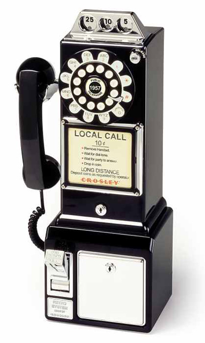
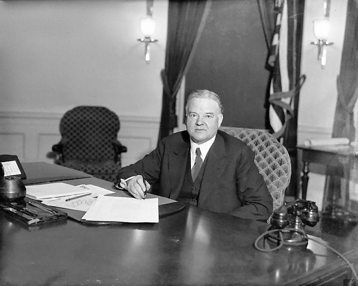
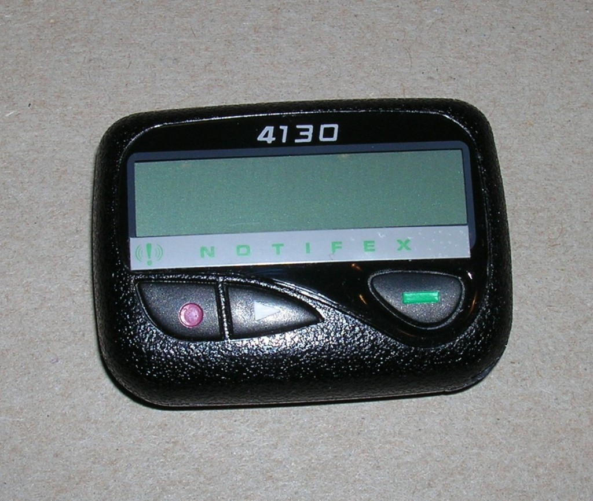
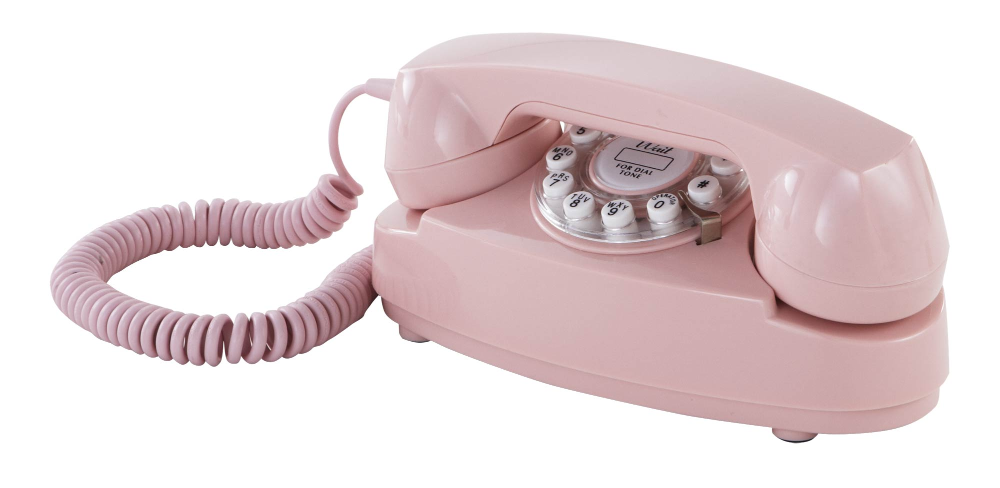
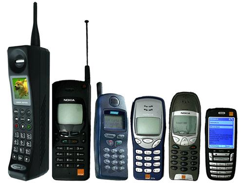
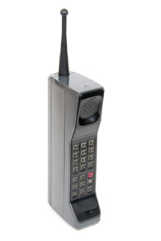
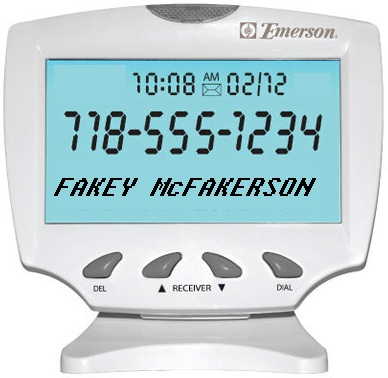
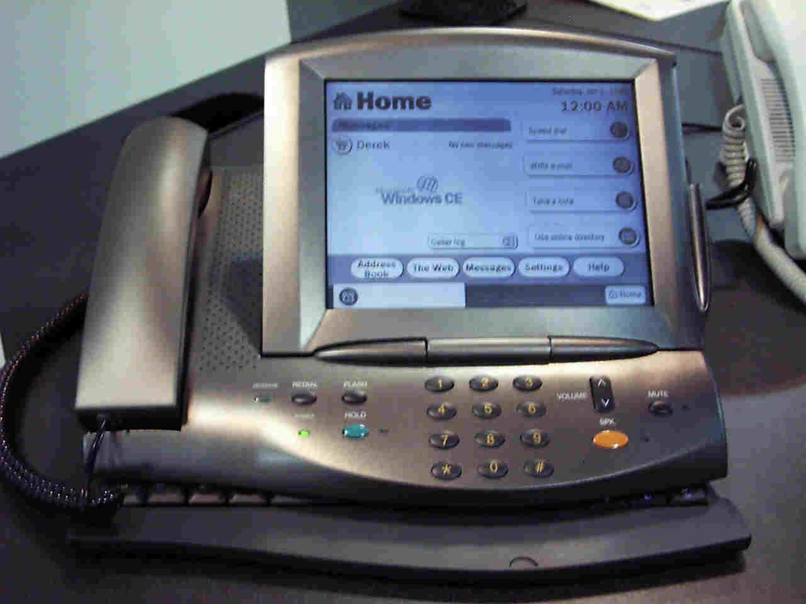
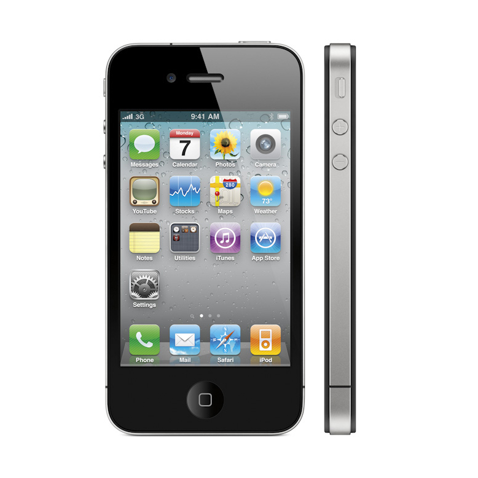
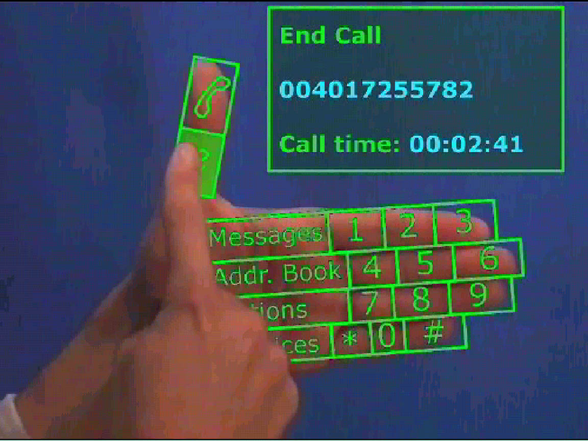

A Brief Timeline of Telecommunications
By Alexei C and Vincent K 10E
-
1876
The first Telephone
The invention of the telephone is the culmination of work done by many individuals, the history of which involves a collection of claims and counterclaims. The development of the modern electrical telephone involved an array of lawsuits founded upon the patent claims of several individuals and numerous companies. However, today, the invention is credited to Alexander Graham Bell who created his functioning prototype in 1876
.jpg)
-
1881
First Directory
Alexander Graham Bell's invention gains traction. In less than a decade the first telephone directory, know as the yellow pages was created. It catagorized organizations, businesses and individuals, allowing for any user of a telephone at the time be able to identify and contact any other user connected to the brand new concept of telecommunications. This was revolutinary

-
1891
The Dial Phone
The first dial phone is introduced, using a rotary dial to create pulse dialing, allowing the new dial phone to target and intitiate telephone calls to a structured telecommunications and identifyable phones. This device already half a million users.

-
1897
The Payphone
First coin-operated telephone installed in the Hartford Bank by the payphone's inventor, William Gray. The phone became public and commerecialised.
 -
1915
The Coast to Coast
The first "official" coast-to-coast call is made from Alexander Graham Bell in New York City to Thomas Watson in San Francisco.

-
1929
First Presidential Phone
Herbert Hoover becomes first president of the United States with a phone on his desk. Until this time, the president talked on a phone from outside a booth outside his executive office.
 -
1941
Pearl Harbor
The Japanese attack on Pearl Harbor affects the telephone system of the United States by causing tremendous traffic peaks in all cities, and an increase from 100 to 400 percent in long distance telephoning - which already is at a record high of 3 million messages. (The United States would again experience this phenomenon in 2001, during the 11 September attacks.)

-
1947
Standardization
Telcos install nationwide numbering plan, simplifying communication between users. Nations other than the US soon follow to globalize the tellecommunication standards.
-
1957
Pagers
Field tests for the first pagers begin in Allentown and Bethlehem, Pennsylvania.
 -
1958
The Princess
Princess Phone introduced. First phone with a lighted dial, became a part of American pop culture - consumerism and innovation strikes again, monetising the device known as the 'phone'
 -
1960
Touch Phones
The first Touch-Tone telephones are test-marketed in Findlay, Ohio. These telephones had 10 buttons, rather than the 12 buttons of today.
 -
1963
Cold War involvement
Hotline established between White House and Kremlin following the Cuban missile crisis, so that the respective leaders of both nations could communicate if such a crisis were to occur again.
-
1968
911
911 chosen as the nationwide emergency number. The nation's telephone companies agree to make this three-digit sequence unavailable as an exchange number

-
1972
Email
First e-mail message. The term "Internet" is used for the first time two years later, but the concept of the Internet as we know it today didn't evolve until later

-
1984
Cells!
The first cellular phones come into existance, in which, the cellular telephone, sometimes called mobile telephone, is a type of short-wave analog or digital telecommunication in which a subscriber has a wireless connection from a mobile phone to a relatively nearby transmitter. The transmitter's span of coverage is called a cell.
 -
1991
Caller ID
Caller ID introduced. Controversial at the time, Caller ID has become America's most popular add-on feature, meaning that individuals could identify and track those who they were contacted and wish to contact.
 -
1998
World Wide Web
9The World Wide Web is born, marking the beginning of the Internet as we know it today. Most Americans get Internet connections through their phone lines.

-
2000
The Web Phone
The "Web Phone" combines a traditional telephone with an LCD touch-screen and a retractable keyboard to let customers surf the Internet, check e-mail, make phone calls and check voice mail from a single device
 -
2000
The "Thin" Phone
The "Thin Phone" integrates wireless Internet access with local wireless phone service, allowing Internat customers to stay connected with everything from Web pages to voice and e-mail, all while on the move
 -
Today and Beyond
"Information Appliances" make Internet mobile, wirless "Web to Go," voice-activated dialing, phone numbers for life, phone calls and Internet on your TV, TV via wireless phones, and much more
